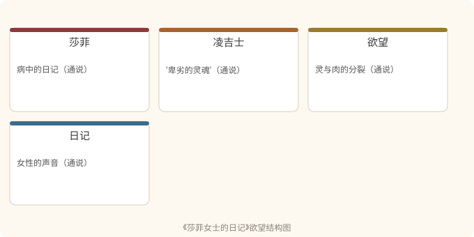

莎菲女士的日记
一、基本信息
| 作者 | 丁玲 |
|---|---|
| 成书/出版 | 1928年（作者页注记：Britannica 语境——成名作） Ding Ling — Encyclopaedia Britannica（百科全书） |
| 国别/地区 | 中国 |
| 时代 | 近代 · 20世纪20年代末 |
| 体裁 | 短篇小说 |
| 语言 | 汉语 |

《莎菲女士的日记》欲望结构图（主题·结构图）
二、创作背景
作者页注记：莎菲女士的日记 (1928)——'成名作（Britannica 语境）'。
Britannica：丁玲——现代中国女作家（作者页语境）。
题材（通说待核）：日记体——病中莎菲对凌吉士的欲望与蔑视。
三、内容脉络
（通说待核）莎菲的日记：肺病疗养的冬春。
（通说待核）'灵与肉'的分裂与胜利的颓然。
四、主要人物表
| 人物 | 身份 | 说明 |
|---|---|---|
| 莎菲 | 病中女学生 | （通说待核） |
| 凌吉士 | 南洋侨生 | （通说待核） |
五、主题与艺术特点
- 女性欲望的大胆书写（通说待核）。
- 日记体的内心独白（通说待核）。
- '五四'之后的个性解放（作者页语境）。
六、影响与评论
- Britannica：丁玲成名作（作者页注记）。
Ding Ling — Encyclopaedia Britannica（百科全书） - Britannica：丁玲《太阳照在桑干河上》获斯大林奖说（作者页交叉——待核）。
Ding Ling — Encyclopaedia Britannica（百科全书）
七、阅读建议
难点
- 日记体的时间碎片。
- 1928年北京公寓语境（通说待核）。
- 《莎菲女士的日记》（人民文学出版社《丁玲全集》等——通说待核）。
- 1928年《小说月报》说待核。
丁玲成名作；与《水》《太阳照在桑干河上》对照。
八、待核实
- 莎菲/凌吉士人名核对（通说）。
- 1928年发表（《小说月报》说）待核。
- '成名作'评价（Britannica 语境）核对。
本页主要来源
相关作品：看不见的人